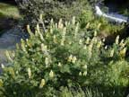
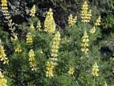
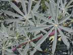
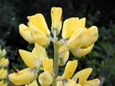
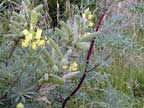

Tree lupin
Lupinus arboreus
Other names
Description
Annual herb up to 1.5 tall. Showy pea like yellow flowers grow in long terminal spikes. Leaves digitate with 5 9 leaflets which are linear, oblong and covered in soft hairs. Fruit is flat pod constricted between the seeds.
Similar plants
Blue lupin (L. angustifolius) is sometimes grown for fodder or for oil production from the seeds.
Distribution
Throughout New Zealand, preferring the sunnier, drier regions.
Toxin
Dubious toxicity no poisonings recorded in NZ. Lupanine and sparteine have been identified in the plant.
Species affected
Other species. of lupins may affect sheep, also cattle, goats, donkeys, horses, pigs and deer.
Clinical signs acute
There is no evidence of poisoning in New Zealand; however, the toxin sparteine causes tonic convulsions, decreased respirations and depression of all motor functions.
Clinical signs chronic
Post mortem signs
Diagnosis
Differential diagnosis
Treatment
Prognosis
Prevention
References
Conner H.E. The Poisonous Plants In New Zealand. 1992. GP Publications Ltd, Wellington
 plant |
 |
|
|
 |
 |
|
|
 |
||
|
|
|
|